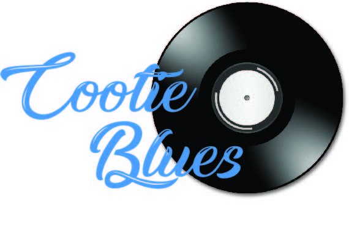

What is an Operating System?
 An operating system is the most important software that runs on a computer. It manages the computer's memory, processes, and all of its software and hardware. It also allows you to communicate with the computer without knowing how to speak the computer's language. Without an operating system, a computer is useless.
Your computer's operating system (OS) manages all of the software and hardware on the computer. Most of the time, there are many different computer programs running at the same time, and they all need to access your computer's central processing unit (CPU), memory, and storage. The operating system coordinates all of this to make sure each program gets what it needs. http://www.gcflearnfree.org/computerbasics/2
Many of you are familiar with Windows and Mac. Both of these are examples of operating systems. They differ from application and utility software. Application and utility software work 'on top' of the operating system to perform specific tasks. For example, Microsoft® Word is application software that one uses to create text documents. However, when the user wants to print the document, after clicking the 'Print' icon, or navigating to File ⇒ Print, Word has to ask the Microsoft® Windows operating system to print the file. Word can't access the printer directly.
So an operating system acts as the 'director' between a system's hardware and its user software. This serves several purposes, most important of which is to protect the hardware from user's meddling.